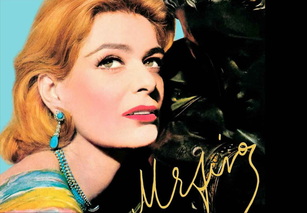
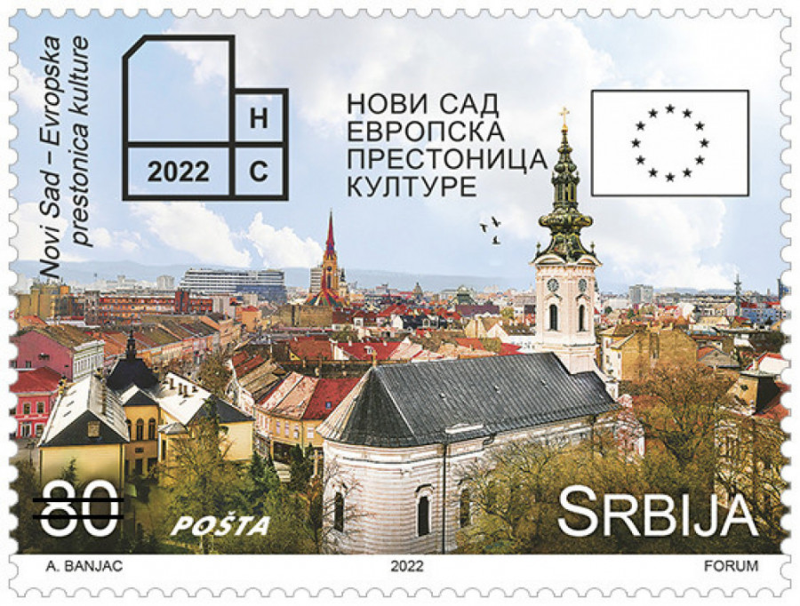

Нови сад - град културе

Мелина Меркури, министарка културе Грчке, и француски министар културе Џак Ланг су 1985. године дошли на идеју да се једном годишње бира Европска престоница културе да се повећа свесност о заједничкој историји и вредностима народа у Европи. Од тада више од 40 европских градова је понело ову титулу као примери богатства и разноликости европских култура.

Нови Сад је понео титулу Европске престонице културе 2022. године. Међу првим градовима ван Европске уније је проглашен за Европску престоницу културе и тако је постао један од 60 градова који су понели ову титулу, негујући богатство различитости и интеркултуралност.